GPU Architecture¶
{kind=link}
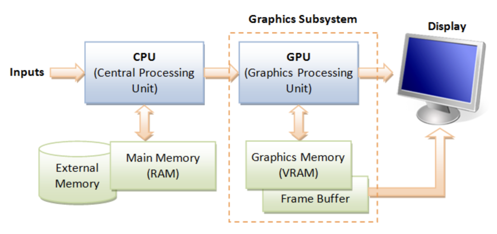
GPU Hardware Units¶
A GPU (graphics processing unit) is built as a massively generic parallel processor of SIMD/SIMT architecture with several specialized processing units inside shown as Fig. 55 from the section Graphics HW and SW Stack.
{kind=link}
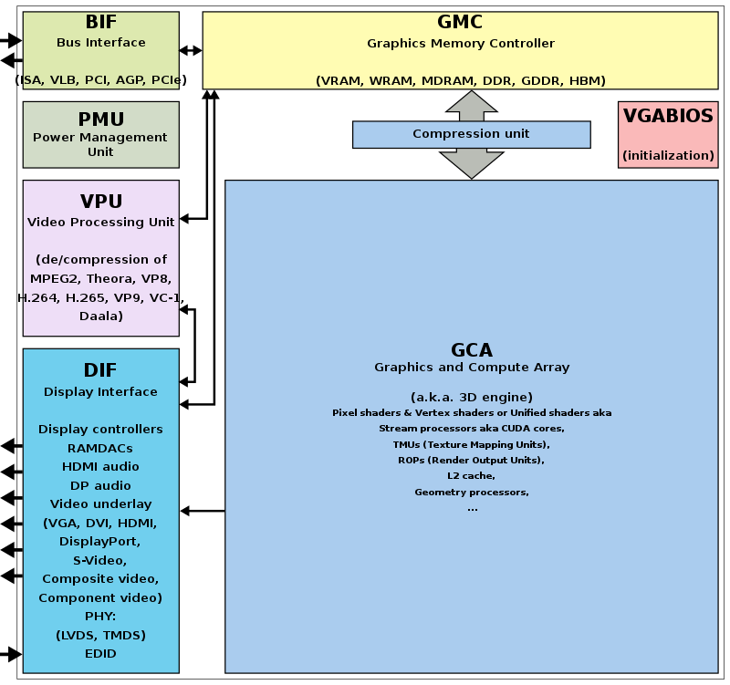
Fig. 55 Components of a GPU: GPU has accelerated video decoding and encoding [2]¶
From compiler’s view, GPU is shown as Fig. 56.
![digraph GPU {
rankdir=LR;
bgcolor="white";
node [shape=box, fontname="Helvetica", fontsize=10];
/* Top-level GPU container */
subgraph cluster_gpu {
label = "Massively Parallel Processor (GPU)";
style = rounded;
color = black;
fontsize=12;
/* Compute cluster: many SMs/CUs */
subgraph cluster_compute {
label = "Compute Cluster (many SMs / CUs)";
style = filled;
fillcolor = "#f7fbff";
color = "#c6dbef";
SMs [label=<
<TABLE BORDER="0" CELLBORDER="0" CELLSPACING="6">
<TR><TD><B>SM 0..N-1</B></TD></TR>
<TR><TD>
<TABLE BORDER="0" CELLBORDER="1" CELLSPACING="0">
<TR><TD><FONT POINT-SIZE="10"><B>Warp Scheduler</B></FONT></TD></TR>
<TR><TD><FONT POINT-SIZE="10">Registers</FONT></TD></TR>
<TR><TD><FONT POINT-SIZE="10">Shared Memory / L1</FONT></TD></TR>
<TR><TD><FONT POINT-SIZE="10">ALUs (FP/INT)</FONT></TD></TR>
<TR><TD><FONT POINT-SIZE="10">SFUs (transcendental)</FONT></TD></TR>
<TR><TD><FONT POINT-SIZE="10">Load/Store Units</FONT></TD></TR>
<TR><TD><FONT POINT-SIZE="10">RegLess Staging Operands (RSO)</FONT></TD></TR>
</TABLE>
</TD></TR>
</TABLE>
>, shape=plaintext];
}
/* Specialized units */
subgraph cluster_special {
label = "Specialized Units";
style = filled;
fillcolor = "#fff7f3";
color = "#fcbba1";
Geo [label="Geometry Units\n(primitive assembly,\ntessellation, clipping)"];
Raster [label="Rasterization Units\n(triangle -> fragments,\nattribute interpolation)"];
TMU [label="Texture Mapping Units (TMUs)\n(sampling & filtering)"];
ROP [label="Render Output Units (ROPs)\n(blend, depth, stencil,\nframebuffer write)"];
Tensor [label="Tensor / Matrix Cores\n(AI accel)"];
RT [label="Ray-Tracing Cores\n(BVH traversal, intersections)"];
Video [label="Video Encode / Decode Engines\n(NVENC / VCN / VPU)"];
Display [label="Display Controller\n(HDMI / DP)"];
}
/* Memory subsystem */
subgraph cluster_mem {
label = "Memory Subsystem";
style = filled;
fillcolor = "#f7fff7";
color = "#c7e9c0";
L1 [label="L1 / Shared Memory (per SM)"];
L2 [label="L2 Cache (shared)"];
VRAM[label="VRAM (GDDR / HBM)\n(high bandwidth)"];
Interconnect [label="Memory Controller / Interconnect"];
Coalescing [label="Memory Coalescing\n(merge warp memory requests)"];
GatherScatter [label="Gather–Scatter\n(irregular memory access)"];
}
/* Connections between major blocks */
SMs -> Geo [label=" vertices"];
Geo -> Raster [label=" primitives"];
Raster -> SMs [label=" fragments (shaded in SMs)"];
SMs -> TMU [label=" texture fetch"];
SMs -> Tensor [label=" matrix ops"];
SMs -> RT [label=" ray queries", style=dashed];
Raster -> ROP [label=" fragments -> tests + blend"];
SMs -> ROP [label=" shaded fragments"];
ROP -> VRAM [label=" final framebuffer write"];
/* Memory subsystem connections */
SMs -> L1 [label=" fast access"];
TMU -> L2 [label=" texture reads"];
SMs -> L2 [label=" global loads/stores"];
L2 -> VRAM [label=" miss -> VRAM"];
Interconnect -> VRAM [label=" memory transactions"];
/* Memory behavior connections */
SMs -> Coalescing [label=" warp memory requests"];
Coalescing -> L2 [label=" optimized transaction"];
SMs -> GatherScatter [label=" irregular access", style=dashed];
GatherScatter -> L2 [label=" multiple transactions", style=dashed];
/* Video/Display */
Video -> VRAM [label=" read/write video frames"];
Display -> VRAM [label=" scanout"];
}
}](_images/graphviz-ed153f27179a02053c73ab818e39fa56bd74a284.png)
Fig. 56 Components of a GPU: SIMD/SIMT + several specialized processing units¶
A GPU is not just “many cores” — it’s a mix of general-purpose ompute clusters, specialized units, and the memory subsystem. It corresponds to the block diagram graph shown in Fig. 56.
The stages of the OpenGL rendering pipeline and the GPU hardware units that accelerate them as shown in Fig. 57:
![digraph OpenGL_GPU_Mapping {
rankdir=TB;
// Use HTML-like label for the whole graph
label=<
<TABLE BORDER="0" CELLBORDER="0" CELLSPACING="0" ALIGN="LEFT">
<TR><TD></TD></TR>
<TR><TD></TD></TR>
<TR><TD><FONT POINT-SIZE="16" COLOR="darkblue"><B>• OpenGL pipeline stages = Yellow</B></FONT></TD></TR>
<TR><TD><FONT POINT-SIZE="16" COLOR="darkblue"><B>• GPU hardware units = Blue</B></FONT></TD></TR>
<TR><TD><FONT POINT-SIZE="16" COLOR="darkblue"><B>• GPU-only internals = Gray</B></FONT></TD></TR>
<TR><TD><FONT POINT-SIZE="16" COLOR="darkblue"><B>• Dashed arrows indicate mapping from OpenGL stages to hardware</B></FONT></TD></TR>
</TABLE>
>;
node [shape=box style="rounded,filled" fontsize=16];
// === OpenGL Pipeline (multi-rows) ===
Application [label="Application\n(CPU Side)", fillcolor=lightyellow];
VertexSpec [label="Vertex Specification\n(glDraw, VBOs)", fillcolor=lightyellow];
OGL_Vertex [label="Vertex Shader", fillcolor=lightyellow];
TessCtrl [label="Tessellation \nControl Shader", fillcolor=lightyellow];
TessGen [label="Tessellation \nPrimitive Generator", fillcolor=lightyellow];
TessEval [label="Tessellation \nEvaluation Shader", fillcolor=lightyellow];
OGL_Geometry [label="Geometry Shader / Clipping", fillcolor=lightyellow];
OGL_Raster [label="Rasterization", fillcolor=lightyellow];
OGL_Fragment [label="Fragment Shader", fillcolor=lightyellow];
OGL_PerFrag [label="Per-Fragment Ops\n(Depth, Stencil, Blend)", fillcolor=lightyellow];
OGL_Framebuf [label="Framebuffer", fillcolor=lightyellow];
// OpenGL flow
Application -> VertexSpec -> OGL_Vertex -> TessCtrl -> TessGen -> TessEval -> OGL_Geometry -> OGL_Raster -> OGL_Fragment -> OGL_PerFrag -> OGL_Framebuf;
// === GPU Hardware Units (multi-rows) ===
HW_Vertex [label="SMs (Vertex Shader)\n(ALUs, SFUs, Load/Store)", fillcolor=lightblue];
HW_Fragment [label="SMs (Fragment Shader)\n(ALUs, SFUs, TMUs)", fillcolor=lightblue];
HW_Geometry [label="Geometry Units\n(Primitive Assembly, Clipping)", fillcolor=lightblue];
HW_Raster [label="Rasterization Units\n(Triangle → Fragments)", fillcolor=lightblue];
ROP [label="Render Output Units (ROPs)\n(Depth, Stencil, Blend)", fillcolor=lightblue];
HW_Framebuf [label="Framebuffer in VRAM", fillcolor=lightblue];
TMU [label="Texture Mapping Units (TMUs)\n(Texture Fetch/Filter)", fillcolor=lightgray];
Display [label="Display Controller\n(Output to Screen)", fillcolor=lightgray];
// Memory hierarchy
L1 [label="L1 / Shared Memory", fillcolor=lightgray];
L2 [label="L2 Cache", fillcolor=lightgray];
VRAM [label="VRAM (GDDR/HBM)", fillcolor=lightgray];
Coalescing [label="Coalescing Unit", fillcolor=lightgray];
GatherScatter[label="Gather–Scatter Unit", fillcolor=lightgray];
// GPU flow
HW_Vertex -> HW_Geometry -> HW_Raster -> HW_Fragment;
HW_Fragment -> TMU;
HW_Fragment -> ROP -> HW_Framebuf -> Display;
// Memory path
HW_Vertex -> L1;
HW_Fragment -> L1;
L2 -> Coalescing;
L1 -> L2 -> VRAM;
L2 -> GatherScatter;
TMU -> L1 [label="Texture Fetch"];
VRAM -> Display;
// === Mapping edges (OpenGL → Hardware) ===
OGL_Vertex -> HW_Vertex [style=dashed color=blue];
TessCtrl -> HW_Vertex [style=dashed color=blue];
TessEval -> HW_Vertex [style=dashed color=blue];
OGL_Geometry -> HW_Geometry [style=dashed color=blue];
OGL_Raster -> HW_Raster [style=dashed color=blue];
OGL_Fragment -> HW_Fragment [style=dashed color=blue];
OGL_PerFrag -> ROP [style=dashed color=blue];
OGL_Framebuf -> HW_Framebuf [style=dashed color=blue];
// === Layering for better spacing ===
{ rank = same; Application; VertexSpec }
{ rank = same; OGL_Vertex; TessCtrl; TessGen }
{ rank = same; TessEval; OGL_Geometry }
{ rank = same; OGL_Raster; OGL_Fragment; OGL_PerFrag; OGL_Framebuf }
{ rank = same; HW_Vertex; HW_Fragment }
{ rank = same; HW_Geometry; HW_Raster; ROP; HW_Framebuf; TMU }
{ rank = same; L1; L2; VRAM; Display }
{ rank = same; Coalescing; GatherScatter }
}](_images/graphviz-c9358e8b6218d8f7f1a13fac7ddd6a4772b42720.png)
Fig. 57 The stages of OpenGL pipeline and GPU’s acceleration components¶
Compute Cluster
Role: Provide large-scale data-parallel execution. Each GPU contains many Streaming Multiprocessors (SMs) or Compute Units (CUs), each capable of executing thousands of threads in parallel.
Components:
Warp Scheduler – Schedules groups of threads (Warps/Wavefronts), issues instructions in SIMT (Single Instruction, Multiple Threads) fashion.
Registers – Per-thread private storage, the fastest memory level.
Shared Memory / L1 Cache – On-chip memory close to the SM. Shared Memory is explicitly managed by the programmer for cooperation across threads, while L1 acts as a transparent cache.
ALUs (FP/INT) – Execute floating-point and integer arithmetic. They form the bulk of compute resources inside an SM.
SFUs (Special Function Units) – Execute transcendental functions such as sin, cos, exp, and reciprocal approximations.
Load/Store Units – Handle global, local, and shared memory access, interact with coalescing and caching logic.
RegLess Staging Operands (RSO) – Temporary operand buffers used to hide instruction and memory latencies.
Usage:
Run programmable shaders (vertex, fragment, geometry, compute).
Perform general-purpose compute workloads (GPGPU).
Issue texture fetch requests to TMUs.
Interact with memory hierarchy via load/store units.
Offload certain operations to Tensor or Ray-Tracing units.
Specialized Units
Role: Accelerate fixed-function or specialized stages of the graphics and compute pipeline that are inefficient to run purely in SMs.
Components and Usage:
Geometry Units – Assemble input vertices into primitives (points, lines, triangles). Perform tessellation (subdivide patches into smaller primitives), clipping (discard geometry outside view), and geometry shading.
Usage: Corresponds to the geometry/tessellation stage in the graphics pipeline.
Rasterization Units – Convert vector-based primitives into fragments (potential pixels). Interpolate per-vertex attributes (texture coordinates, normals, colors) across the surface of each primitive.
Usage: Bridge between geometry and fragment stages; produces fragments for SM fragment shading.
Texture Mapping Units (TMUs) – Fetch texture data from memory, apply filtering (bilinear, trilinear, anisotropic), and compute texel addresses (wrap, clamp).
Usage: Invoked during fragment shading inside SMs to provide sampled texture values.
Render Output Units (ROPs) – Handle late-stage pixel processing. Perform blending operations (alpha, additive), depth and stencil tests, and write final pixel values to the framebuffer in VRAM.
Usage: Final step of the graphics pipeline before display scanout.
Tensor / Matrix Cores – Perform fused-multiply-add (FMA) on large matrix tiles. Designed for machine learning, AI inference, and linear algebra.
Usage: Accelerate deep learning workloads or matrix-heavy compute kernels.
Ray-Tracing Units (RT Cores) – Traverse bounding volume hierarchies (BVH) and perform ray–primitive intersection tests in hardware.
Usage: Enable real-time ray tracing [3] by offloading intersection work from SMs.
Video Engines – Dedicated ASICs for video codec operations such as H.264/H.265/AV1 encode and decode.
Usage: Media playback, streaming, and video encoding without occupying SMs.
Display Controller – Reads final framebuffer images from VRAM and drives display interfaces like HDMI and DisplayPort.
Usage: Outputs rendered frames to monitors or VR headsets.
Memory Subsystem
Role: Deliver high-bandwidth data access to thousands of threads while minimizing latency through caching and access optimization.
Components:
L1 / Shared Memory – Closest to SMs. Shared Memory is explicitly used by programs for intra-block communication, while L1 acts as an automatic cache.
Usage: Boosts performance by keeping frequently accessed data close to execution units.
L2 Cache – Shared across all SMs. Reduces redundant traffic to VRAM and improves latency for reused data.
Usage: Provides intermediate caching layer for both compute and graphics.
VRAM (GDDR / HBM) – External high-bandwidth DRAM. Stores textures, framebuffers, vertex/index buffers, and large compute datasets.
Usage: The main memory backing for all GPU workloads.
Interconnect / Memory Controller – Orchestrates memory requests, manages access to VRAM, and ensures fairness between SMs.
Usage: Handles scheduling and distribution of memory transactions.
Memory Coalescing Unit – Combines multiple per-thread memory requests from a Warp into fewer, wider transactions. Most effective for contiguous access patterns.
Usage: Improves memory bandwidth efficiency and reduces wasted cycles.
Gather–Scatter Unit – Handles irregular or sparse memory accesses where coalescing is not possible. May break requests into multiple smaller transactions.
Usage: Supports workloads such as sparse matrix operations, graph traversal, or irregular data structures.
Data Flow Highlights
Graphics pipeline path: Vertex data → Geometry Units → Rasterization Units → Fragment Shading (SMs) → TMUs (texture fetch) → ROPs (blend/depth/stencil) → VRAM (framebuffer).
Compute path: SMs execute general-purpose kernels → optional offload to Tensor or RT cores → interact with caches → VRAM.
Memory behavior: SMs issue memory requests → Coalescing Unit optimizes if possible → L2 cache → VRAM. For irregular access (e.g., sparse data), Gather–Scatter generates multiple VRAM transactions.
Display path: Final framebuffer stored in VRAM → Display Controller → HDMI / DP scanout.
All Together
GPU provides the following hardware to accelerate graphics rendering pipeline as follows:
- ✅ Simplified Flow (OpenGL → Hardware)
Vertex Fetch → VRAM & Memory Controllers.
Vertex Shader → SM cores + Geometry Units.
Geometry/Tessellation → SM core + Geometry Units.
Rasterization → Rasterization units.
Fragment Shader → SM cores + TMUs (texture sampling).
Depth/Stencil/Blending → ROPs.
Framebuffer Write → L2 cache & VRAM → Display Controller.
Variable Rate Shading (VRS) Support
By utilizing certain GPU units as outlined below, Variable Rate Shading (VRS) can be supported [4].
Rasterizer (Rasterization Units):
Decides how many fragments per pixel (or group of pixels) will actually be shaded.
Instead of generating 1 fragment per pixel, it may shade 1 fragment for a 2×2 or 4×4 block and reuse that result.
Fragment Shader Cores (SMs/CUs):
Still run the shading code, but at a reduced frequency (fewer fragment invocations).
ROPs (and pipeline integration):
Apply results to the framebuffer, handling blending/depth as usual.
SM (SIMT)¶
Single instruction, multiple threads (SIMT) is an execution model used in parallel computing where a single central “Control Unit” broadcasts an instruction to multiple “Processing Units” for them to all optionally perform simultaneous synchronous and fully-independent parallel execution of that one instruction. Each PU has its own independent data and address registers, its own independent Memory, but no PU in the array has a Program counter [5].
Summary:
Each Control Unit has a Program Counter (PC) and has tens of Processor Unit (PU).
Each Processor Unit (PU) has it’s General Purpose Register Set (GPR) and stack memory.
The PU is a pipleline execution unit compared to CPU architecture.
SM Hardware¶
The leading NVIDIA GPU architecture is illustrated in Fig. 58, where the scoreboard is shown without the mask field. This represents a SIMT pipeline with a scoreboard.
{kind=link}
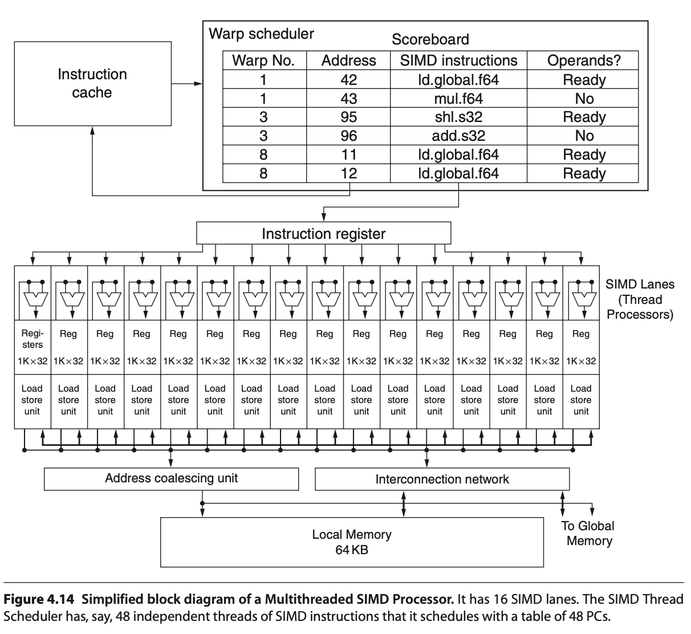
Fig. 58 Simplified block diagram of a Multithreaded SIMD Processor. (figure from book [6])¶
Note
A SIMD Thread executed by SIMD Processor, a.k.a. SM, has 16 Lanes.
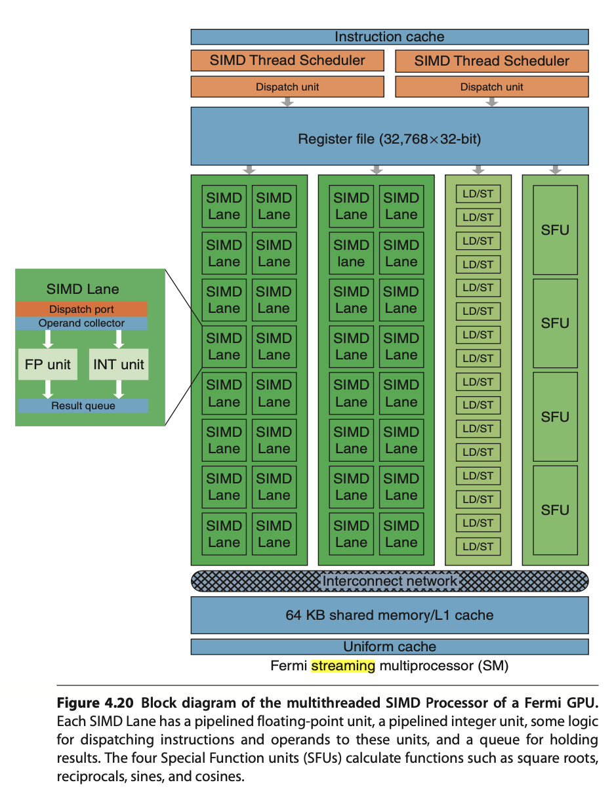 |
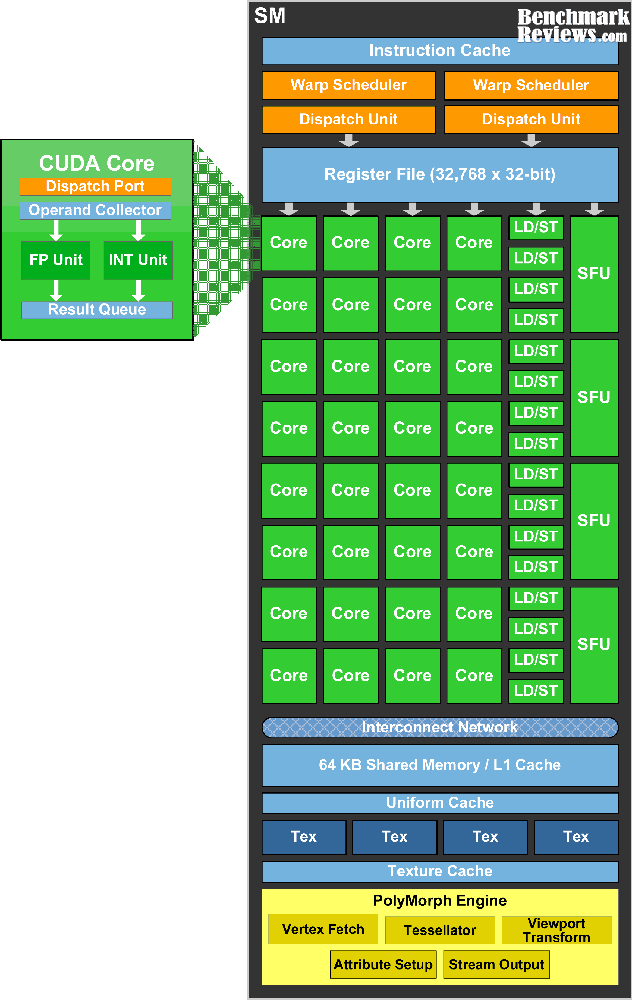 |
{kind=link}
{kind=link}
Streaming Multiprocessor SM has two 16-way SIMD units and four special function units. Fermi has 32 SIMD Lanes and Cuda cores. SM has L1 and Read Only Cache (Uniform Cache) GTX480 has 48 SMs.
In Fermi, ALUs run at twice the clock rate of rest of chip. So each decoded instruction runs on 32 pieces of data on the 16 ALUs over two ALU clocks [10]. However after Fermi, the ALUs run at the same clock rate of rest of chip.
As Fig. 59 in Fermi and Volta, it can dual-issue “float + integer” or “integer + load/store” but cannot dual-issue “float + float” or “int + int”.
Uniform cache: used for storing constant variables in OpenGL (see uniform of Pipeline Qualifiers) and in OpenCL/CUDA.
Configurable maximum resident warps and allocated registers per thread as follows:
Example: Fermi SM (SM 2.x)
Hawdware limit:
Total registers per SM = 32,768 × 32-bit
Max Warps per SM = 48
Max threads per SM = 1536
Max registers/thread = 63
Configuration: If each thread uses R registers:
Max resident threads = floor(32768 / R)
Max resident Warps = floor(Max resident threads / 32)
E.g. R=32: Max resident threads = 32768/32 = 1024, Max resident Warps = 1024/32 = 32.
After Fermi, the hardware limit for Maxwell, Pascal, Volta and Ampere are:
Hawdware limit:
Each SM includes 32 Cuda cores and Lanes → 32 active threads.
Total registers per SM = 64K x 32-bit
Max Warps per SM = 64
Max threads per SM = 2048 (64 Warps x 32 threads)
Max registers/thread = 255
Notes:
Registers per thread: max number of registers compiler can allocate to a thread.
The “registers per thread” limit (255) is a hardware/compiler limit, but the actual number used depends on the kernel. If a kernel uses too many registers per thread, occupancy drops (fewer threads can be resident).
The “max threads per SM = 2048” is a theoretical upper limit; actual resident threads will also depend on shared memory usage, number of thread-blocks per SM, and register usage.
Note
A SIMD thread executed by a Multithreaded SIMD processor, also known as an SM, processes 32 elements.
As configuation above, the 32,768 registers per SM can be configured to each thread alllocated 32 registers, Max resident Warps = 32.
Fermi has a mode bit that offers the choice of using 64 KB of SRAM as a 16 KB L1 cache with 48 KB of Local Memory or as a 48 KB L1 cache with 16 KB of Local Memory [11].
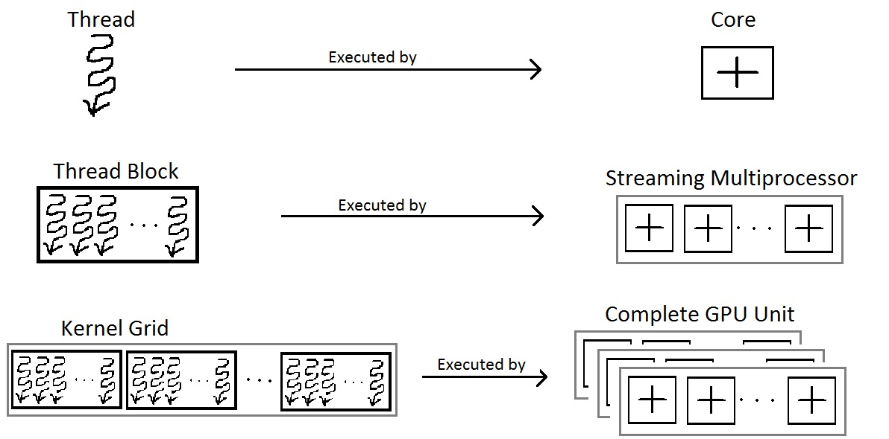 |
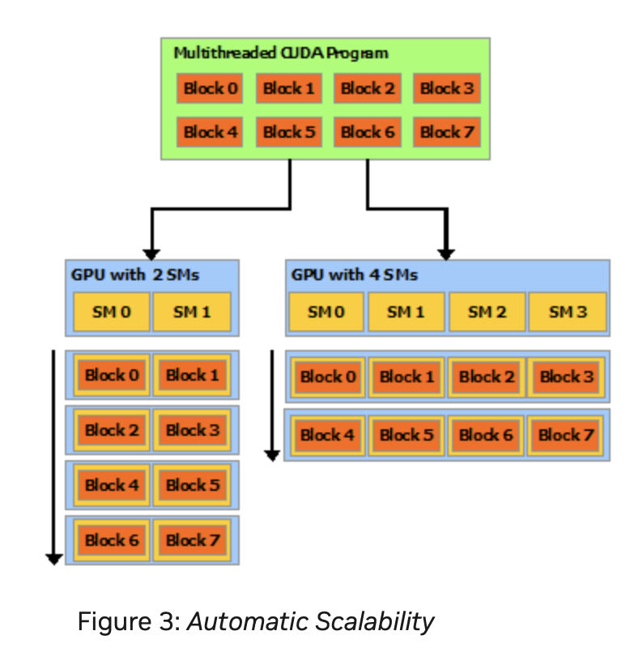 |
{kind=link}
{kind=link}
SM Scheduling¶
A GPU is built around an array of Streaming Multiprocessors (SMs). A multithreaded program is partitioned into blocks of threads that execute independently from each other, so that a GPU with more multiprocessors will automatically execute the program in less time than a GPU with fewer multiprocessors [13].
Nvidia’s GPUs:
Fermi (2010), Kepler (2012), Maxwell (2014), Pascal (2016), Volta (2017), Turing (2018), Ampere (2020), Ada Lovelace (2022), and Hopper (2022, for data centers).
Two levels of scheduling:
Level 1: Thread Block Scheduler
For Fermi/Kepler/Maxwell/Pascal (pre-Volta): Warp-synchronous SIMT (lock-step in Warp):
A Warp includes 32 threads in Fermi GPU. Each Streaming Multiprocessor SM includes 32 Lanes in Fermi GPU, as shown in Fig. 61, the Thread Block includes a Warp (32 threads). According Fig. 62, more than one block can be assigned and run on a same SM.
When an SM executes a Thread Block, all the threads within the block are are executed at the same time. If any thread in a Warp is not ready due to operand data dependencies, the scheduler switches context between Warps. During a context switch, all the data of the current Warp remains in the register file so it can resume quickly once its operands are ready [12].
Once a Thread Block is launched on a multiprocessor (SM), all of its Warps are resident until their execution finishes. Thus a new block is not launched on an SM until there is sufficient number of free registers for all Warps of the new block, and until there is enough free shared memory for the new block [12].
Level 2: Warp Scheduler
Manages CUDA threads (resident threads) within the same Warp.
A resident thread is a thread whose execution context has been allocated on an SM (registers, Warp slot, shared memory). Once resident, the thread is always in exactly one of the following execution states.
Resident Thread ├── Ready │ Thread is eligible to execute; no pending dependencies. │ ├── Running │ Warp containing the thread is currently issued by the scheduler. │ │ ├── Active (mask = 1) │ │ Thread participates in the current instruction. │ │ │ └── Inactive (mask = 0) │ Thread is masked off due to branch divergence and │ will re-activate at a reconvergence point. │ ├── Stalled │ Warp cannot issue due to memory latency, synchronization, │ or scoreboard dependency. │ └── Exited Thread has completed execution but its Warp has not yet been released from the SM.Threads retain their registers and per-thread local memory during the stalled state. Therefore, the context switch incurs almost no overhead compared to CPU threads.
No pipeline flush: illustrate below.
No register save/restore
No stack frame swapping
No OS involvement
Takes roughly 1 cycle
No pipeline flush because:
For Fermi/Kepler/Maxwell/Pascal (pre-Volta): Warp-synchronous SIMT (lock-step in Warp):
No data is saved/restored when switching to another Warp
Switching Warps = selecting a different Warp in the Warp scheduler
No pipeline flush
On an NVIDIA GPU, no pipeline flush occurs when a Warp stalls because the Warp’s next instruction is never issued until its operands are ready as illustrated in Warp scheduling in Level 1. The stalled Warp simply stops issuing instructions, and its pipeline slot is taken by another ready Warp. When the stall condition clears, the Warp re-enters the pipeline by issuing the stalled instruction anew. No state is saved or restored.
For Volta, Turing, Ampere, Hopper: Independent Thread Scheduling:
No pipeline flush
Stalled threads simply do not issue instructions.
Other threads in the same warp continue issuing independently.
No pipeline flush needed and No data is saved/restored because instructions are tracked per thread, not per warp.
SIMT and SPMD Pipelines¶
This section illustrates the difference between SIMT and SPMD pipelines using the same pipeline stages: Fetch (F), Decode (D), Execute (E), Memory (M), and Writeback (W).
A GPU contains many SMs. The execution model between SMs is MIMD (Multiple Instructions, Multiple Data) when running different programs, or SPMD (Single Program, Multiple Data). However, within a single SM, the execution model is SIMD/SIMT.”
Low-end GPUs implement SIMD in their pipelines, where all instructions are executed in lockstep. High-end GPUs, however, approximate SPMD in their pipelines, meaning that instructions are interleaved within the pipeline, as shown below.
SPMD Programming Model vs SIMD/SIMT Execution
In the SISD of CPU, a thread is a single pipeline execution unit which can be issued at any specific address.
In a multi-core CPU running SPMD, each core can schedule and execute instructions at any program counter (PC). For example, core-1 may execute I(1–10), while core-2 executes I(31–35). For GPU, however, within an SM, it is not possible to schedule thread-1 to execute I(1–10) while thread-2 executes I(31–35).
As result, there is no mainstream GPU that is truly hardware-SPMD (where each thread has its own independent pipeline). All modern GPUs (NVIDIA, AMD, Intel) implement SPMD as a programming model, but under the hood they execute in SIMD lock-step groups (Warps or Wavefronts). GPUs expose an SPMD programming model (each thread runs the same kernel on different data). However, the hardware actually executes instructions in SIMD/SIMT lock-step groups.
An example to illustrate the difference between Pascal SIMT, Volta SIMT and SPMD.
Divergent Kernel Example:
-------------------------
if (tid % 2 == 0) { // even threads: long loop
for (...) { loop_body } // many iterations
} else { // odd threads: short path
C[tid] = A[tid] + B[tid];
}
Legend: F=Fetch, D=Decode, E=Execute, M=Memory, W=Writeback
S=Stall/masked-off, "..." = loop continues
===================================================================
Pascal (lock-step SIMT with SIMT stack)
-------------------------------------------------------------------
Cycle → 0 1 2 3 4 5 6 7 8 9 10 11 12 ...
T0 even: F D E M W F D E M W F D ...
T1 odd : S S S S S S S S S S S S ...
(Odd threads wait until even path completes, then:)
... F D E M W → done
===================================================================
Volta (SIMT with independent thread scheduling)
-------------------------------------------------------------------
Cycle → 0 1 2 3 4 5 6 7 8 9 10 11 ...
T0 even: F D E M W F D E M W F D ...
T1 odd : F D E M W done
(Odd thread issues its short path early,
interleaved with even loop instructions)
===================================================================
True SPMD (CPU-like, fully independent threads)
-------------------------------------------------------------------
Cycle → 0 1 2 3 4 5 6 7 8 9 ...
T0 even: F D E M W F D E M W ...
T1 odd : F D E M W done
(Threads fetch/execute independently —
odd thread finishes immediately)
Note
SPMD and MIMD
When run a single program across all cores, SPMD and MIMD pipelines look the same.
The subection Mapping data in GPU includes more details in Lanes masked.
Scoreboard purpose:
GPU scoreboard = in-order issue, out-of-order completion
CPU reorder buffer (ROB) = out-of-order issue + completion, but retire in-order - CPUs use a ROB to support out-of-order issue and retirement.
Comparsion of Volta and Pascal
In a lock-step GPU without divergence support, the scoreboard entries include only {Warp-ID, PC (Instruction Address), …}. With divergence support (as in real-world GPUs), the scoreboard entries expand to {Warp-ID, PC, mask, …}.
Volta (Cuda thread/SIMD Lane with PC, Program Couner and Call Stack)
GPU scoreboard = in-order issue, out-of-order completion
SIMT GPU before Volta = scoreboard contains: { Warp ID + PC + Active Mask }
Volta = scoreboard contains: { Warp ID + PC per thread (+ readiness per thread) }
Example for mutex [14]
//
__device__ void insert_after(Node *a, Node *b)
{
Node *c;
lock(a); lock(a->next);
...
unlock(c); unlock(a);
}
Assume that the mutex is contended across SMs but not within the same SM. On average, each thread spends 10 cycles executing the insert_after operation without resource contention, and 20 cycles when accounting for contention. Therefore, the average total execution time for 32 threads in an SM is:
Volta: 20 cycles
Pascal: 640 cycles (20 cycles × 32 threads, due to lack of independent progress inside a Warp)
Processor Units and Memory Hierarchy in NVIDIA GPU [15]¶
{kind=link}
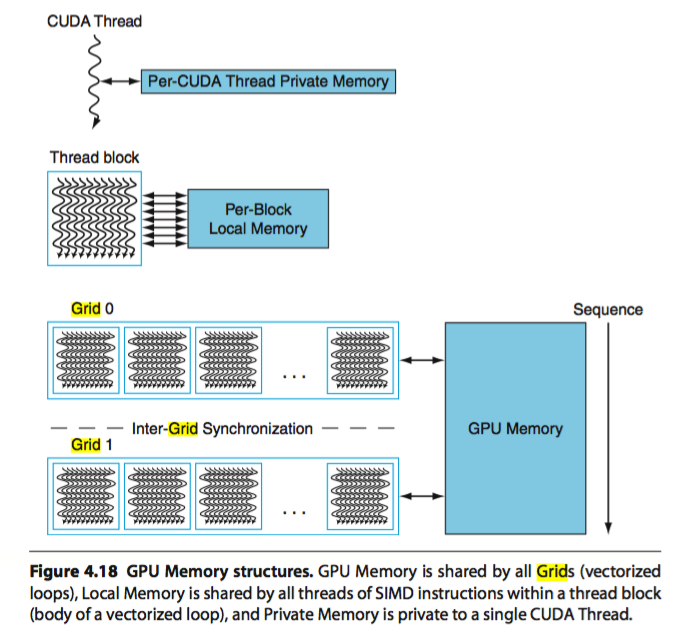
![digraph GPU_Memory_Hierarchy {
rankdir=TB;
node [shape=box, style=rounded, fontname="Helvetica"];
// Processing hierarchy
GigaThread [label="GigaThread Engine\n(Chip-wide Scheduler)"];
GPC [label="GPC\n(Graphics Processing Cluster)"];
TPC [label="TPC\n(Texture Processing Cluster)"];
SM [label="SM\n(Streaming Multiprocessor)"];
Core [label="CUDA Cores"];
// Memory hierarchy
Global [label="Global Memory (HBM/GDDR)\nGPU-wide, slowest"];
L2 [label="L2 Cache\nGPU-wide"];
L1 [label="L1 Cache\nPer-SM, unified with Shared"];
Uniform [label="Uniform / Constant Cache\nPer-SM, Read-only,\nFor Uniform Parameters"];
Shared [label="Shared Memory\nPer-SM, Block-visible"];
Local [label="Local Memory\nPer-thread, in DRAM"];
Reg [label="Registers\nPer-thread, fastest"];
// Hierarchy connections
GigaThread -> GPC -> TPC -> SM -> Core;
// Memory hierarchy connections
Global -> L2;
L2 -> L1;
L2 -> Uniform;
L1 -> Core;
Uniform -> Core;
Shared -> SM;
Reg -> Core;
Local -> Core;
// Styling groups
subgraph cluster_gpu {
label="GPU Processing Units";
style=dashed;
GigaThread; GPC; TPC; SM; Core;
}
subgraph cluster_mem {
label="Memory Hierarchy";
style=dashed;
Global; L2; L1; Uniform, Shared; Local; Reg;
}
}](_images/graphviz-9129d137e73fcdd723d34ed5a499679d424353ff.png)
Fig. 64 Processor Units and Memory Hierarchy in NVIDIA GPU Local Memory is shared by all threads and Cached in L1 and L2. In addition, the Shared Memory is provided to use per-SM, not cacheable.¶
Illustrate L1, L2 and Global Memory used by SM and whole chip of GPU as Fig. 65.
{kind=link}
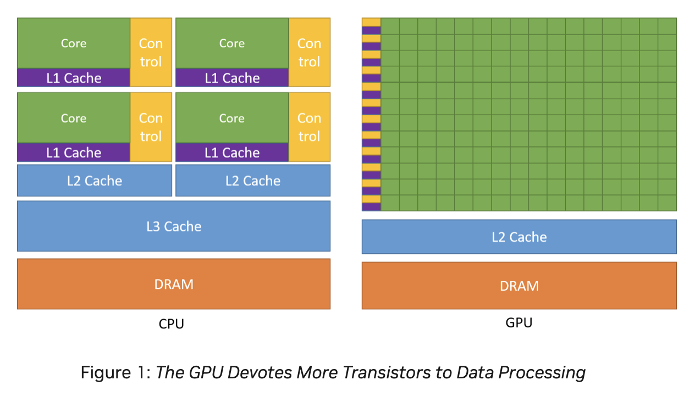
Fig. 65 L1 Cache: Per-SM, Coherent across all 16 Lanes in the same SM. L2 Cache: Coherent across all SMs and GPCs. Global Memory (DRAM: HBM/GDDR). Both HBM and GDDR are DRAM. GDDR (Graphics DDR) – optimized for GPUs (GDDR5, GDDR6, GDDR6X). HBM (High Bandwidth Memory) – 3D-stacked DRAM connected via TSVs (Through-Silicon Vias) for extremely high bandwidth and wide buses [13].¶
The Fig. 64 illustrates the memory hierarchy in NVIDIA GPU. The Cache flow for 3D Model Information, Animation Parameters, and GLSL Variables is as follows:
- 3D Model Information:
VBO/IBO → Global → L2 → L1 → Registers
Material constants → Uniform Cache → Registers
- Animation Parameters:
Bone matrices → Uniform Cache → Registers
Morph targets → Global → L2 → L1 → Registers
Shared bone data (compute) → Shared Memory
- GLSL Variables:
uniform → Uniform Cache
in (vertex attributes) → Global → L2 → L1
out (varyings) → Registers → Interpolators
buffer (SSBO) → Global → L2 → L1
shared → Shared Memory
local arrays → Registers or Local Memory
More details of the NVIDIA GPU memory hierarchy are described as follows:
Registers
Per-thread, fastest memory, located in CUDA cores, as illustrated also in Fig. 59.
Configurable maximum resident warps and allocated registers per thread following Fig. 59.
Latency: ~1 cycle.
Uniform / Constant cache
Stored constant variables in OpenGL and OpenCL/CUDA, as illustrated in Fig. 59.
Local Memory
Per-thread, stored in global DRAM.
Cached in L1 and L2.
Latency: high, depends on cache hit/miss.
Shared Memory
Per-SM, shared across threads in a Thread Block as shown in Fig. 59.
On-chip, programmer-controlled.
Latency: ~20 cycles.
L1 Cache
Per-SM, unified with shared memory.
Hardware-managed.
Latency: ~20 cycles.
L2 Cache
Shared across the entire GPU chip.
Coherent across all SMs and GPCs as shown in Fig. 65.
Global Memory (DRAM: HBM/GDDR)
Visible to all SMs across all GPCs.
Highest latency (~400–800 cycles).
GPU Hierarchy Context
GigaThread Engine (chip-wide scheduler)
Contains multiple GPCs.
Fermi (2010): up to 4 GPCs per chip.
Pascal GP100 (Tesla P100): 6 GPCs.
Volta GV100 (Tesla V100): 6 GPCs.
Distributes Thread Blocks to all GPCs.
GPC (Graphics Processing Cluster)
Contains multiple TPCs.
TPC (Texture Processing Cluster)
Groups 1–2 SMs.
SM (Streaming Multiprocessor)
Contains CUDA cores, registers, shared memory, L1 cache.
CUDA Cores
Execute threads with registers and access the memory hierarchy.
{kind=link}
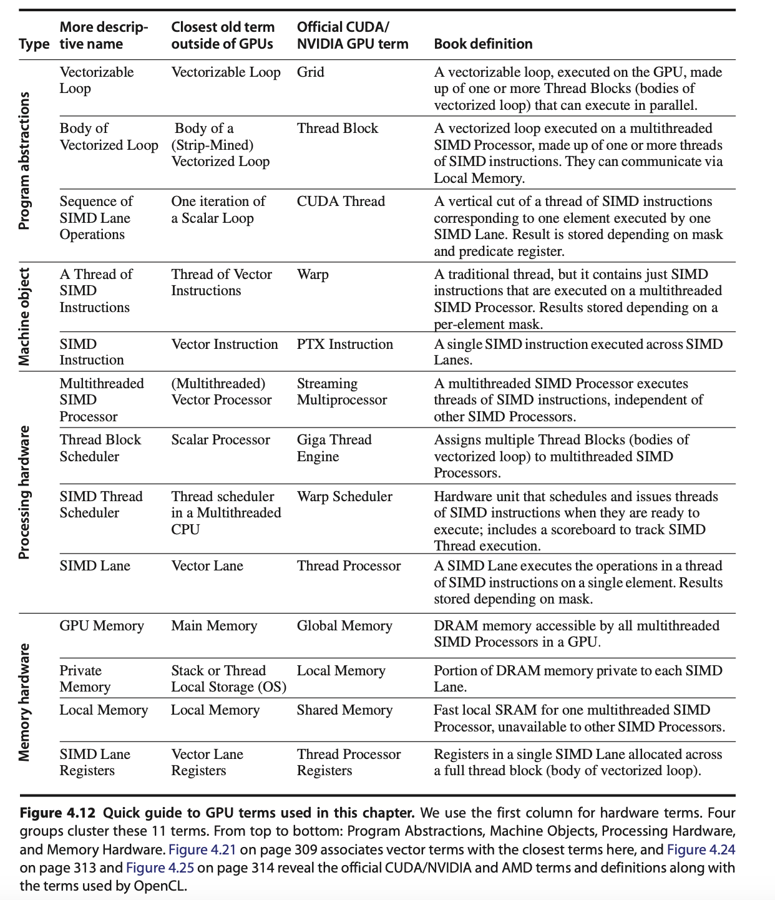
![digraph WarpSchedulerPipeline {
rankdir=TB;
node [shape=box, style=filled, fillcolor=lightgray];
WarpScheduler -> InstructionIssue;
InstructionIssue -> Lane0;
InstructionIssue -> Lane1;
InstructionIssue -> Lane2;
InstructionIssue -> Lane3;
InstructionIssue -> Lane4;
InstructionIssue -> Lane5;
InstructionIssue -> Placeholder;
InstructionIssue -> Lane30;
InstructionIssue -> Lane31;
Lane0 [label="Lane 0\n(Chime A / Chime B)", fillcolor=lightyellow];
Lane1 [label="Lane 1\n(Chime A / Chime B)", fillcolor=lightyellow];
Lane2 [label="Lane 2\n(Chime A / Chime B)", fillcolor=lightyellow];
Lane3 [label="Lane 3\n(Chime A / Chime B)", fillcolor=lightyellow];
Lane4 [label="Lane 4\n(Chime A / Chime B)", fillcolor=lightyellow];
Lane5 [label="Lane 5\n(Chime A / Chime B)", fillcolor=lightyellow];
Placeholder [label="………………", shape=plaintext, fillcolor=white];
Lane30 [label="Lane 30\n(Chime A / Chime B)", fillcolor=lightyellow];
Lane31 [label="Lane 31\n(Chime A / Chime B)", fillcolor=lightyellow];
}](_images/graphviz-d4fcbf76501cd0140e34ee122ac690d71005d91d.png)
Fig. 67 In dual-issue mode, Chime A carries floating-point data while Chime B carries integer data—both issued by the same CUDA thread. In contrast, under time-sliced execution, Chime A and Chime B carry either floating-point or integer data independently, and are assigned to separate CUDA threads.¶
A Warp of 32 threads is mapped across 16 Lanes. If each Lane has 2 Chimes, it may support dual-issue or time-sliced execution as Fig. 67.
In the following matrix multiplication code, the 8096 elements of matrix A = B × C are mapped to Thread Blocks, SIMD Threads, Lanes, and Chimes as illustrated in the Fig. 68. In this example, it run on time-sliced execution.
// Invoke MATMUL with 256 threads per Thread Block
__host__
int nblocks = (n + 255) / 512;
matmul<<<nblocks, 255>>>(n, A, B, C);
// MATMUL in CUDA
__device__
void matmul(int n, double A, double *B, double *C) {
int i = blockIdx.x*blockDim.x + threadIdx.x;
if (i < n) A[i] = B[i] + C[i];
}
{kind=link}
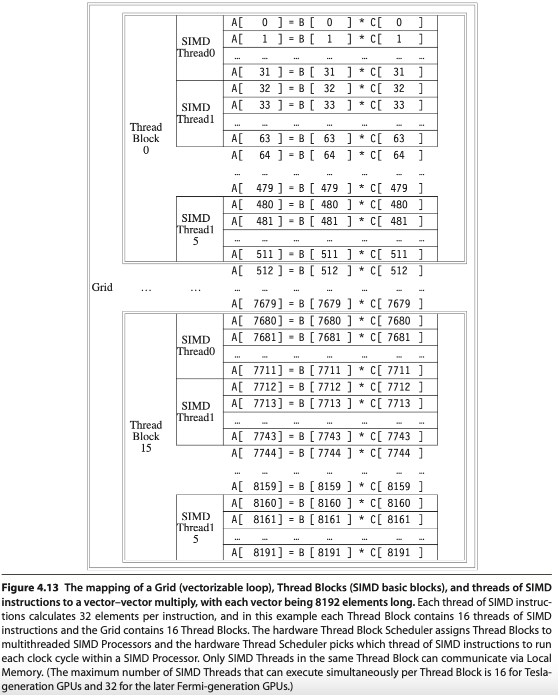
Fig. 68 Mapping 8192 elements of matrix multiplication for Nvidia’s GPU (figure from [18]). SIMT: 16 SIMD threads in one Thread Block.¶
Explain the mapping and execution in Fig. 68 for MATMUL CUDA Example using the terminology from Fig. 66 and the previous sections of this book, presented in the table below.
Terms |
Structure |
Description |
|---|---|---|
Grid, Giga Thread Engine |
Each loop (Grid) consists of multiple Thread Blocks. |
Grid is Vectorizable Loop as Fig. 66. The hardware scheduler Guda Thread Engine schedules the Thread Blocks to SMs. |
Thread Block |
In this example, each Grid has 16 Giga Thread [19]. |
Each Thread Block is assigned 512 elements of the vectors to work on. As Fig. 68, it assigns 16 Thread Block to 16 SMs. Giga Thread is the name of the scheduler that distributes Thread Blocks to Multiprocessors, each of which has its own SIMD Thread Scheduler [19]. More than one Block can be mapped to a same SM as the explanation in “Level 1: Thread Block Scheduler” for Fig. 62. |
Streaming Multiprocessor, SM, GPU Core (Warp) [20] |
Each SIMD Processor has 16 SIMD Threads. |
Each SIMD processor includes local memory, as in Fig. 63. Local memory is shared among SIMD Lanes within a SIMD processor but not across different SIMD processors. A Warp has its own PC and may correspond to a whole function or part of a function. Compiler and runtime may assign functions to the same or different Warps [21]. |
Cuda core |
Fermi has 32 Cuda cores in a SM as Fig. 60. |
A CUDA core is the scalar execution unit inside an SM. It is capable of executing one integer or floating-point instruction from one Lane of a Warp. The CUDA core is analogous to an ALU pipeline stage in a CPU. |
Cuda Thread |
Each SM can configure to have different number of resident threads. |
Fermi can configure Max resident threads = 32768/32 = 1024 for 32 registers/per thread in a SM as memtioned eariler. A CUDA thread is the basic unit of execution defined in CUDA’s programming model. Each thread executes the kernel code independently with its own registers, program counter (PC), and per-thread local memory. Each Thread has its TLR (Thread Level Registers) allocated from Register file (32768 x 32-bit) by SIMD Processor (SM) as Fig. 59. |
SIMD Lane |
Each SIMD Thread has 32 Lanes. |
A vertical cut of a thread of SIMD instructions corresponding to one element executed by one SIMD Lane. It is a vector instruction with processing 32-elements. A Warp of 32 threads is mapped across 32 Lanes. Lane = per-thread execution slot inside a Warp. If each Lane has 2 Chimes, it may support dual-issue or time-sliced execution as Fig. 67. |
Chime |
Each Lane has 2 Chimes. |
A Chime represents one “attempt” or opportunity for issuing instructions from Warps. In Fermi (SM2.x): Each SM has 2 Warp schedulers. Each Warp scheduler has 2 dispatch units (dual-issue, but with constraints, it can issue “float + load/store” for “fadd and load C[i]” in this example). |
References
Memory Subsystem¶
Address Coalescing and Gather-scatter¶
Brief description is shown in Fig. 69.
![digraph GPU_Memory {
rankdir=LR;
node [shape=box, style=rounded, fontsize=12];
subgraph cluster_gather {
label="Gather-Scatter (Sparse Matrix Access): \nIndirect index of LD/ST";
color=green;
Idx [label="Index Array A[]:\nA[0]=200\nA[1]=400\nA[2]=1200\nA[3]=320", shape=note, style=filled, fillcolor=lightyellow];
G1 [label="Thread 1\nMem[A[0]]"];
G2 [label="Thread 2\nMem[A[1]]"];
G3 [label="Thread 3\nMem[A[2]]"];
G4 [label="Thread 4\nMem[A[3]]"];
Idx -> G1;
Idx -> G2;
Idx -> G3;
Idx -> G4;
}
subgraph cluster_coalescing {
label="Address Coalescing: \nMerge memory transcations into a contiguous memory access";
color=blue;
T1 [label="Thread 1\nAddr 100"];
T2 [label="Thread 2\nAddr 104"];
T3 [label="Thread 3\nAddr 108"];
T4 [label="Thread 4\nAddr 112"];
MT [label="Merged Transaction", shape=ellipse, style=filled, fillcolor=lightblue];
T1 -> MT;
T2 -> MT;
T3 -> MT;
T4 -> MT;
T5 [label="Addr[100..112]", shape=ellipse, style=filled, fillcolor=lightblue];
MT -> T5;
}
}](_images/graphviz-d9fea9549f1cbe50dc6738ecc80dd695b5dfcce8.png)
Fig. 69 Coalescing and Gather-scatter¶
The Load/Store Units (LD/ST) is important because memory latency is huge compared to ALU ops. Some GPUs provide Address Coalescing and gather-scatter to accelerate memory access.
Address Coalescing: Memory coalescing is the process of merging memory requests from threads in a Warp (NVIDIA: 32 threads, AMD: 64 threads) into as few memory transactions as possible.
Cache miss (global memory/DRAM): Coalescing = big performance improvement.
Cache hit (L1/L2): Coalescing = smaller benefit, since cache line fetch already amortizes cost.
Note that unlike vector architectures, GPUs don’t have separate instructions for sequential data transfers, strided data transfers, and gather-scatter data transfers. All data transfers are gather-scatter! To regain the efficiency of sequential (unit-stride) data transfers, GPUs include special Address Coalescing hardware to recognize when the SIMD Lanes within a thread of SIMD instructions are collectively issuing sequential addresses. That runtime hardware then notifies the Memory Interface Unit to request a block transfer of 32 sequential words. To get this important performance improvement, the GPU programmer must ensure that adjacent CUDA Threads access nearby addresses at the same time that can be coalesced into one or a few memory or cache blocks, which our example does [22].
Gather-scatter data transfer: HW support sparse vector access is called gather-scatter. The VMIPS instructions are LVI (load vector indexed or gather) and SVI (store vector indexed or scatter) [23].
1. Address Coalescing in GPU Memory Transactions
Definition: Memory coalescing is the process of merging memory requests from threads in a Warp (NVIDIA: 32 threads, AMD: 64 threads) into as few memory transactions as possible.
How It Works:
If threads access contiguous and aligned addresses, the hardware combines them into a single memory transaction.
If threads access strided or random addresses, the GPU must issue multiple transactions, wasting bandwidth.
Examples:
Coalesced (efficient):
// Each thread accesses consecutive elements value = A[threadId];
→ One transaction for 32 threads.
Non-coalesced (inefficient):
// Each thread accesses strided elements value = A[threadId * 100];
→ Many transactions required due to striding.
2. Gather–Scatter in Sparse Matrix Access
Definition: Gather–scatter refers to memory operations where each GPU thread in a Warp loads from or stores to irregular memory addresses. This is common in sparse matrix operations, where non-zero elements are stored in compressed formats.
Sparse Matrix Example (CSR format):
CSR (Compressed Sparse Row) stores three arrays:
values[]: non-zero entries of the matrixcolIndex[]: column indices for each non-zerorowPtr[]: index intovalues[]for each row
Sparse matrix-vector multiplication (SpMV):
for row in matrix: for idx = rowPtr[row] to rowPtr[row+1]: col = colIndex[idx]; // gather index val = values[idx]; // gather nonzero y[row] += val * x[col]; // scatter result
Characteristics:
Gather: Each thread loads from potentially scattered locations (
values[idx]orx[col]).Scatter: Results may be written back to irregular output locations (
y[row]).Challenge: These accesses often break memory coalescing, leading to multiple memory transactions. An example is shown as follows:
Summary:
Gather–scatter is fundamental for sparse matrix access but typically results in non-coalesced memory patterns.
Address coalescing is critical for high GPU throughput; restructuring data to improve coalescing often provides significant performance gains.
VRAM dGPU¶
![digraph gpu_memory {
rankdir=LR;
node [shape=box style=rounded fontsize=10];
subgraph cluster_shared {
label = "Shared Memory (Integrated GPU)";
CPU [label="CPU\n(Caches, DMA)"];
GPU [label="iGPU\n(DMA Engine)"];
MC [label="Shared\nMemory Controller"];
DRAM [label="System RAM\n(DDR/LPDDR)"];
CPU -> MC -> DRAM;
GPU -> MC;
GPU -> DRAM [style=dashed, label="DMA"];
}
subgraph cluster_dedicated {
label = "Dedicated Memory (Discrete GPU)";
CPU2 [label="CPU\n(Caches)"];
SYS_RAM [label="System RAM"];
GPU2 [label="dGPU\n(Caches, DMA)"];
VRAM [label="VRAM\n(GDDR/HBM)"];
CPU2 -> SYS_RAM;
GPU2 -> VRAM;
}
edge [style=invis];
DRAM -> CPU2;
}](_images/graphviz-b15d10ede9aed5eda2be8f259ad29270b1cced99.png)
Fig. 70 iGPU versus dGPU¶
Reason:
1. Since CPU and GPU have different requirements, a shared memory design cannot match the performance of dedicated GPU memory.
2. In systems with shared memory (like integrated GPUs), both the CPU and GPU access the same physical memory (DRAM). This leads to several forms of contention:
Cache Coherency Overhead
DMA Contention
Bus & Memory Controller Bottleneck
Advantages:
A discrete GPU has its own dedicated memory (VRAM) while an integrated GPU (iGPU) shares memory with the CPU as shown in Fig. 70.
Dedicated GPU memory (VRAM) outperforms shared CPU-GPU memory due to higher bandwidth, lower latency, parallel access optimization, and no contention with CPU resources.
Feature |
Shared Memory (CPU + iGPU) |
Dedicated GPU Memory (dGPU) |
|---|---|---|
Bandwidth |
Lower (DDR/LPDDR) |
Higher (GDDR/HBM) |
Latency |
Higher |
Lower |
Parallel Access |
Limited |
Optimized for many threads |
Cache Coherency |
Required (with CPU) |
Not required |
DMA Bandwidth |
Shared with CPU |
GPU has exclusive DMA access |
Memory Contention |
Yes |
No |
Performance |
Lower: Bandwidth bottlenecks, CPU-GPU interference and Cache/DMA conflicts |
Higher: Wide memory bandwidth, Parallel thread access and Low latency memory access |
Dedicated memory allows the GPU to run high-throughput workloads without interference from the CPU. It provides (1). wide bandwidth, (2). optimized parallel access, and (3). low-latency paths, avoiding cache and DMA conflicts for superior performance.**
(1). Wide bandwidth: Dedicated GPU memory (VRAM) is often based on GDDR6, GDDR6X, or HBM2/3, which are much faster than standard system RAM (DDR4/DDR5).
Typical bandwidths:
GDDR6: ~448–768 GB/s
HBM2: up to 1 TB/s+
DDR5 (shared memory): ~50–80 GB/s
Impact: Faster access to textures, vertex buffers, and framebuffers—critical for rendering and compute tasks.
(2). Optimized parallel access:
VRAM is optimized for the massively parallel architecture of GPUs.
It allows thousands of threads to access memory simultaneously without stalling.
Shared system memory is optimized for CPU access patterns, not thousands of GPU threads.
(3). Low-latency paths:
Dedicated memory is physically closer to the GPU die.
No need to traverse the PCIe bus like discrete GPUs accessing system RAM.
In shared memory systems (like integrated GPUs), memory access may have to go through a memory controller shared with the CPU, adding delay.
RegLess-style architectures [24]¶
Note
RegLess remains a research concept, not (as far as public evidence shows) a commercial design in shipping GPUs.
Difference: Add Staging Buffer between Register Files and Execution Unit.
This section outlines the transition from traditional GPU operand coherence using a monolithic register file and L1 data cache, to a RegLess-style architecture that employs operand staging and register file-local coherence.
✅ Operand Delivery in Traditional GPU: Fig. 71:
![digraph TraditionalOperandDelivery {
rankdir=LR;
node [shape=box, style=filled, fontname="Helvetica", fontsize=10];
subgraph cluster_memory {
label="Memory Hierarchy";
style=filled;
color=lightgray;
GMEM [label="Global Memory"];
L1 [label="L1 Cache", fillcolor=lightyellow];
}
subgraph cluster_registers {
label="Register File";
style=filled;
color=lightblue;
RF [label="Register File"];
}
subgraph cluster_execution {
label="Execution Pipeline";
style=filled;
color=lightgreen;
EU [label="Execution Unit"];
}
GMEM -> L1 [label="Coherence (Hardware-managed)", color=blue];
L1 -> RF [label="LD/ST (Compiler-controlled)", style=dashed];
RF -> EU [label="Operands"];
L1 -> EU [label="Cached Data (optional)", style=dashed];
}](_images/graphviz-bd33b042318ecfdaa386dbde3588947469e0c564.png)
Fig. 71 Operand Delivery in Traditional GPU (Traditional Model: Register File + L1 Cache)¶
- Architecture:
Large monolithic register file per SM (e.g., 256KB, Maxwell, Pascal, Volta and Ampere have 64K x 32-bit register file per SM, see Configurable maximum resident warps and allocated registers per thread)
Coherent with L1 data cache via write-through or write-back policies
- Challenges:
High energy cost due to cache coherence traffic
Complex invalidation and synchronization logic
Register pressure limits Warp occupancy (limit the number of ative Warps)
Redundant operand tracking across register file and cache
Example:
v1 = normalize(N)
v2 = normalize(L)
v3 = dot(v1, v2)
v4 = max(v3, 0.0)
v5 = mul(v4, color)
# All operands reside in register file and may be cached in L1
✅ Operand Delivery in RegLess GPU (with L1 Cache in LD Path): Fig. 72:
![digraph RegLessOperandDeliveryWithL1 {
rankdir=LR;
node [shape=box, style=filled, fontname="Helvetica", fontsize=10];
subgraph cluster_memory {
label="Memory Hierarchy";
style=filled;
color=lightgray;
GMEM [label="Global Memory"];
L1 [label="L1 Cache", fillcolor=lightyellow];
}
subgraph cluster_registers {
label="Register File";
style=filled;
color=lightblue;
RF [label="Register File"];
}
subgraph cluster_execution {
label="Execution Pipeline";
style=filled;
color=lightgreen;
SB [label="Staging Buffer"];
EU [label="Execution Unit"];
}
GMEM -> L1 [label="Coherence (Hardware-managed)", color=blue];
L1 -> RF [label="Operand Fetch (via LD)", style=dashed];
RF -> SB [label="Staging (Just-in-Time)", style=dashed];
SB -> EU [label="Transient Operands"];
RF -> EU [label="Persistent Operands"];
RF -> RF [label="Internal Coherence", color=green];
}](_images/graphviz-046ca113194c53e32adcabaed1f027734e64e7a4.png)
Fig. 72 Operand Delivery in RegLess GPU (with L1 Cache in LD Path)¶
Description
Global Memory: Source of all operands and data.
L1 Cache: Participates in memory hierarchy; may serve LD requests.
Register File: Receives operands via LD; stages them into Staging Buffer for Transient Operands.
Staging Buffer: Holds transient operands for immediate execution.
Execution Unit: Consumes operands from Staging Buffer for Transient Operands and Register File for Persistent Operands.
Notes
L1 Cache is not part of staging—it only serves LDs.
Dashed arrows: Compiler-controlled operand movement.
Solid arrows: Operand delivery to execution.
Green self-loop: Internal coherence within Register File.
RegLess Model: Staging-Aware Register File
- Architecture:
Smaller register file (e.g., 64–128KB per SM)
For Transient Operands, no L1 cache coherence required
Operands staged dynamically based on lifetime
- Key Concepts:
Region slicing: compiler divides computation into operand regions
Operand tagging: transient, intermediate, persistent
Metadata compression: region-level hints, not per-instruction lifetimes
- Benefits:
~75% reduction in register file size
~11% energy savings
Simplified coherence model
Improved Warp occupancy
Example with Operand Staging:
v1 = normalize(N) # transient
v2 = normalize(L) # transient
v3 = dot(v1, v2) # intermediate
v4 = max(v3, 0.0) # intermediate
v5 = mul(v4, color) # persistent
# v1 and v2 staged briefly, v3–v4 may be staged or registered, v5 fully
# registered
Compiler-Hardware Interface
- Compiler Responsibilities:
Emit structured IR with operand usage hints
Slice computation graph into regions
Avoid explicit staging register allocation
- Hardware Responsibilities:
Interpret operand lifetime metadata
Dynamically stage operands or allocate registers
For Transient Operands, eliminate L1 cache coherence logic
- Metadata Compression Techniques:
Region-level tagging
Operand class encoding
Profile-guided optimization
Off-chip metadata tables (e.g., DEER)
Conclusion
The move to RegLess-style coherence simplifies GPU operand management, reduces energy, and enables more efficient shader execution. Compiler-guided operand staging and region slicing allow hardware to dynamically optimize operand placement without burdening the instruction stream with excessive metadata.
Specialized Units¶
As shown in section GPU Hardware Units, the stages of the OpenGL rendering pipeline and the GPU hardware units that accelerate them as shown in Fig. 73:
Fig. 73 The stages of OpenGL pipeline and GPU’s acceleration components¶
We now explain how these GPU hardware acceleration units—Geometry Units, Rasterization Units, Texture Mapping Units (TMUs), and Render Output Units (ROPs) —- work together with SMs to provide GPU-ISA instructions that accelerate the graphics pipeline illustrated in Fig. 74 of section 3D Rendering.
Figure illustrated in section 3D Rendering
{kind=link}
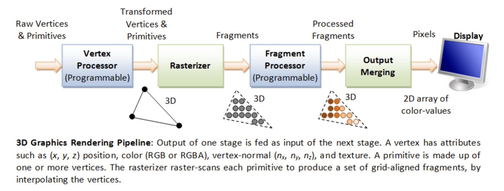
Geometry Units¶
Function:
Raw Vertices & Primitives → Transformed Vertices & Primitives
Suppose the GLSL geometry shader looks like this:
An example of GLSL geometry shader
#version 450
layout(triangles) in;
layout(line_strip, max_vertices = 2) out;
void main() {
gl_Position = gl_in[0].gl_Position;
EmitVertex();
gl_Position = gl_in[1].gl_Position;
EmitVertex();
EndPrimitive();
}
The corresponding PTX instructions and pipeline flow as Fig. 75.
![digraph SM_Geometry_Assembly {
rankdir=LR;
bgcolor="white";
node [shape=box, style="rounded,filled", fontname="Arial", fontsize=11];
/* Graph-level title (left-aligned, bold) */
label=<
<TABLE BORDER="0" CELLBORDER="0" CELLSPACING="0" ALIGN="LEFT">
<TR><TD><FONT POINT-SIZE="14" COLOR="#003366"><B>SM → Geometry Unit: PTX-like Assembly Flow</B></FONT></TD></TR>
<TR><TD><FONT POINT-SIZE="10" COLOR="#003366">Example sequence showing loads/moves and {@code call emit}/{@code call cut} dispatching primitives</FONT></TD></TR>
</TABLE>
>;
labelloc=top;
/* SM thread node */
SMThread [fillcolor="#FFF2CC" label=<
<TABLE BORDER="0" CELLBORDER="0" CELLSPACING="0" ALIGN="LEFT">
<TR><TD><B>Thread running in SM</B></TD></TR>
<TR><TD>• Executes geometry shader program</TD></TR>
<TR><TD>• Issues compiled PTX-style microcode</TD></TR>
</TABLE>
>];
/* Instruction Fetch / Decoder */
InstFetch [fillcolor="#E6F2FF" label=<
<TABLE BORDER="0" CELLBORDER="0" CELLSPACING="0" ALIGN="LEFT">
<TR><TD><B>Instruction Fetch & Decode</B></TD></TR>
<TR><TD>• Fetches micro-instructions from shader code</TD></TR>
<TR><TD>• Decodes into ALU / LD / CALL operations</TD></TR>
</TABLE>
>];
/* Assembly sequence node showing PTX-like lines */
AsmSeq [fillcolor="#FFFFFF" penwidth="1" label=<
<TABLE BORDER="0" CELLBORDER="0" CELLSPACING="0" ALIGN="LEFT">
<TR><TD><B>Compiled (PTX-like) Instruction Sequence</B></TD></TR>
<TR><TD><FONT FACE="monospace">ld.global.v4.f32 {r0, r1, r2, r3}, [in_attr0];</FONT></TD></TR>
<TR><TD><FONT FACE="monospace">mov.f32 o0, r0;</FONT></TD></TR>
<TR><TD><FONT FACE="monospace">mov.f32 o1, r1;</FONT></TD></TR>
<TR><TD><FONT FACE="monospace">mov.f32 o2, r2;</FONT></TD></TR>
<TR><TD><FONT FACE="monospace">mov.f32 o3, r3;</FONT></TD></TR>
<TR><TD><FONT FACE="monospace"><B>call emit;</B></FONT></TD></TR>
<TR><TD><FONT FACE="monospace">ld.global.v4.f32 {r4, r5, r6, r7}, [in_attr1];</FONT></TD></TR>
<TR><TD><FONT FACE="monospace">mov.f32 o0, r4;</FONT></TD></TR>
<TR><TD><FONT FACE="monospace">mov.f32 o1, r5;</FONT></TD></TR>
<TR><TD><FONT FACE="monospace">mov.f32 o2, r6;</FONT></TD></TR>
<TR><TD><FONT FACE="monospace">mov.f32 o3, r7;</FONT></TD></TR>
<TR><TD><FONT FACE="monospace"><B>call emit;</B></FONT></TD></TR>
<TR><TD><FONT FACE="monospace"><B>call cut;</B></FONT></TD></TR>
</TABLE>
>];
/* Output registers / buffers that hold emitted vertex data */
OutRegs [shape=note, fillcolor="#FFFFE0", label=<
<TABLE BORDER="0" CELLBORDER="0" CELLSPACING="0" ALIGN="LEFT">
<TR><TD><B>Output Registers / Emit Buffer</B></TD></TR>
<TR><TD>• o0..oN hold per-vertex outputs (position, attrs)</TD></TR>
<TR><TD>• Emit buffer queues vertices for Geometry Unit</TD></TR>
</TABLE>
>];
/* Geometry Unit with internal stages (simplified) */
GeoUnit [fillcolor="#D9E8FF" label=<
<TABLE BORDER="0" CELLBORDER="0" CELLSPACING="0" ALIGN="LEFT">
<TR><TD><B>Geometry Unit (hardware)</B></TD></TR>
<TR><TD>• Accepts emitted vertices from SM output regs</TD></TR>
<TR><TD>• Primitive Assembly / Tessellation / GS handling</TD></TR>
<TR><TD>• Culling, Clipping, Viewport transform</TD></TR>
<TR><TD>• Primitive Setup → send to Rasterizer</TD></TR>
</TABLE>
>];
Rasterizer [fillcolor="#F2F8FF" label=<
<TABLE BORDER="0" CELLBORDER="0" CELLSPACING="0" ALIGN="LEFT">
<TR><TD><B>Rasterizer</B></TD></TR>
<TR><TD>• Consumes prepared primitives</TD></TR>
<TR><TD>• Produces fragments for fragment shading</TD></TR>
</TABLE>
>];
/* Dataflow edges */
SMThread -> InstFetch [label=" compiled microcode / instruction pointer" fontsize=10];
InstFetch -> AsmSeq [label=" decode -> micro-ops" fontsize=10];
AsmSeq -> OutRegs [label=" write outputs (o0..oN)" fontsize=10];
OutRegs -> GeoUnit [label=" Emit vertex(s) (emit/cut triggers)" fontsize=10];
GeoUnit -> Rasterizer [label=" prepared primitives" fontsize=10];
/* Control arrows (illustrate call emit/cut semantics) */
AsmSeq -> GeoUnit [label=" call emit / call cut (control msgs)", style=dashed, color="#3333CC"];
/* layout hints */
{ rank = same; SMThread; InstFetch; AsmSeq }
{ rank = same; OutRegs; GeoUnit; Rasterizer }
}](_images/graphviz-3520d4c71614f02e3751f7366f08dc83bbc2df60.png)
Fig. 75 Fetch a sequence of Geometry instructions and pass to Geometry Unit¶
The Geometry Unit in a GPU is a collection of fixed-function and programmable stages responsible for transforming assembled primitives (points, lines, triangles, patches) into screen-space primitives ready for rasterization. The emit and cut are compiler intrinsics that map to control messages to the Geometry Unit. When we say emit and cut in NVIDIA PTX (or HLSL/GLSL geometry shaders), they’re not ALU instructions that run in the SM like add or mul. Instead, they act like special control instructions that tell the GPU’s fixed-function Geometry Unit what to do with the vertex data currently in the SM’s output registers illustrated in Fig. 76.
![digraph EmitCut_Flow {
rankdir=LR;
fontsize=12;
labelloc="t";
label="GPU Geometry Shader Dataflow — EmitVertex() and EndPrimitive()";
node [shape=box, style=rounded, fontname="Helvetica"];
subgraph cluster_shader {
label="Streaming Multiprocessor (SM)";
color=lightblue;
style=filled;
fillcolor="#D8EFFF";
thread [label="Shader Thread\n(Geometry Shader Instructions)", shape=box];
emit [label="EmitVertex()\n• write varyings\n• commit vertex", shape=box];
cut [label="EndPrimitive()\n• mark primitive boundary", shape=box];
thread -> emit -> cut;
}
subgraph cluster_fifo {
label="On-Chip FIFO / URB / LDS Buffer";
color=gray;
style=filled;
fillcolor="#EEEEEE";
fifo [label="FIFO Buffer\n(Holds emitted vertices\nand primitive markers)", shape=box];
}
subgraph cluster_geom {
label="Geometry Unit / Primitive Assembler";
color=lightgreen;
style=filled;
fillcolor="#E0FFE0";
geom [label="Geometry Unit\n• reads FIFO entries\n• assembles primitives", shape=box];
}
subgraph cluster_rast {
label="Rasterization Pipeline";
color=lightgray;
style=dashed;
rast [label="Rasterizer\n• receives completed\ntriangles/lines", shape=box];
}
// Dataflow edges
emit -> fifo [label="write vertex data"];
cut -> fifo [label="write primitive end marker"];
fifo -> geom [label="fetch vertex packets"];
geom -> rast [label="assembled primitives"];
// Control flow notes
thread -> emit [style=dashed, color=gray, label="shader executes intrinsics"];
geom -> fifo [style=dotted, color=gray, label="read signals / ready flags"];
// Legend
legend [shape=note, label="LEGEND:\nEmitVertex() = vertex data write\nEndPrimitive() = mark primitive end\nSM → FIFO → Geometry Unit → Rasterizer", fontsize=10];
}](_images/graphviz-29decf5480a0516f56f24779af6154d2a5a50c3f.png)
Fig. 76 Micro-level flow: SM → Geometry Unit via Emit/Cut¶
Unlike GLSL textures, which are converted into a specific hardware ISA, the Geometry Shader in Fig. 73 maps directly to the Geometry Units instead of the SMs.
Geometry Unit bridges the vertex shading stage and the rasterization stage as shown in Fig. 77.
![digraph Geometry_Unit {
rankdir=TB;
bgcolor="white";
node [shape=box, style="rounded,filled", fontname="Arial", fontsize=14];
/* Graph-level left-aligned title (bold, dark blue) */
label=<
<TABLE BORDER="0" CELLBORDER="0" CELLSPACING="0" ALIGN="LEFT">
<TR>
<TD>
<FONT POINT-SIZE="18" COLOR="#003366"><B>GPU Geometry Unit - internal stages & dataflow</B></FONT>
</TD>
</TR>
<TR>
<TD>
<FONT POINT-SIZE="14" COLOR="#003366">Flow: Vertex output - Primitive Assembly - (Tessellation) - Geometry Shader - Clipping - Viewport Transform - Primitive Setup - Rasterizer</FONT>
</TD>
</TR>
</TABLE>
>;
labelloc=top;
/* External stages (vertex / rasterizer) */
VertexOut [fillcolor="#FFF2CC" label=<
<TABLE BORDER="0" CELLBORDER="0" CELLSPACING="0" ALIGN="LEFT">
<TR><TD><B>Vertex Shader Output</B></TD></TR>
<TR><TD>• Transformed vertices (clip/NDC)</TD></TR>
<TR><TD>• Per-vertex attributes (normals, UVs, colors)</TD></TR>
</TABLE>
>];
Rasterizer [fillcolor="#F2F8FF" label=<
<TABLE BORDER="0" CELLBORDER="0" CELLSPACING="0" ALIGN="LEFT">
<TR><TD><B>Rasterizer</B></TD></TR>
<TR><TD>• Consumes prepared primitives</TD></TR>
<TR><TD>• Produces fragments for fragment shading</TD></TR>
</TABLE>
>];
/* Geometry Unit core blocks */
Assembly [fillcolor="#D9E8FF" label=<
<TABLE BORDER="0" CELLBORDER="0" CELLSPACING="0" ALIGN="LEFT">
<TR><TD><B>Primitive Assembly / Input Assembler</B></TD></TR>
<TR><TD>• Group vertices into primitives \n(triangles, lines, patches)</TD></TR>
<TR><TD>• Fetch index buffers, vertex attributes</TD></TR>
</TABLE>
>];
Tessellation [fillcolor="#E8F7E8" label=<
<TABLE BORDER="0" CELLBORDER="0" CELLSPACING="0" ALIGN="LEFT">
<TR><TD><B>Tessellation (optional)</B></TD></TR>
<TR><TD>• Tessellation Control + Primitive Gen + Eval</TD></TR>
<TR><TD>• Patch subdivision, generate new vertices/primitives</TD></TR>
</TABLE>
>];
GeoShader [fillcolor="#D9E8FF" label=<
<TABLE BORDER="0" CELLBORDER="0" CELLSPACING="0" ALIGN="LEFT">
<TR><TD><B>Geometry Shader / Stream Output (optional)</B></TD></TR>
<TR><TD>• Programmable stage: modify or emit primitives</TD></TR>
<TR><TD>• Can amplify primitives (performance cost)</TD></TR>
</TABLE>
>];
Culling [fillcolor="#FFF4D9" label=<
<TABLE BORDER="0" CELLBORDER="0" CELLSPACING="0" ALIGN="LEFT">
<TR><TD><B>Primitive Culling & Clipping</B></TD></TR>
<TR><TD>• Frustum clipping, user-space frustum tests</TD></TR>
<TR><TD>• Back-face culling, scissor tests</TD></TR>
</TABLE>
>];
Viewport [fillcolor="#FFF4D9" label=<
<TABLE BORDER="0" CELLBORDER="0" CELLSPACING="0" ALIGN="LEFT">
<TR><TD><B>Viewport / Screen Transform</B></TD></TR>
<TR><TD>• NDC → screen coordinates (viewport scale + offset)</TD></TR>
<TR><TD>• Apply depth range mapping</TD></TR>
</TABLE>
>];
Setup [fillcolor="#FFF4D9" label=<
<TABLE BORDER="0" CELLBORDER="0" CELLSPACING="0" ALIGN="LEFT">
<TR><TD><B>Primitive Setup / Scan-conversion Prep</B></TD></TR>
<TR><TD>• Compute edge equations, slopes, barycentrics</TD></TR>
<TR><TD>• Prepare interpolants (dx/dy) for attributes</TD></TR>
</TABLE>
>];
/* Resource boxes / notes */
Resources [shape=note, fillcolor="#FFFFE0", label=<
<TABLE BORDER="0" CELLBORDER="0" CELLSPACING="0" ALIGN="LEFT">
<TR><TD><B>Resources / HW considerations</B></TD></TR>
<TR><TD>• Shared scheduling with vertex units</TD></TR>
<TR><TD>• Dedicated small caches / FIFOs for index/vertex fetch</TD></TR>
<TR><TD>• Fixed-function blocks for edge setup (for performance)</TD></TR>
</TABLE>
>];
/* Edges: dataflow */
VertexOut -> Assembly [label=" vertices + attributes" fontsize=14];
Assembly -> Tessellation [label=" primitives\n / patches" fontsize=14];
Tessellation -> GeoShader [label=" subdivided\n primitives" fontsize=14];
Assembly -> GeoShader [label=" primitives (if tess disabled)" fontsize=14];
GeoShader -> Culling [label=" emitted primitives" fontsize=14];
Culling -> Viewport [label=" clipped\n primitives" fontsize=14];
Viewport -> Setup [label=" screen-space verts\n + interpolants" fontsize=14];
Setup -> Rasterizer [label=" prepared primitives (edge eqns)" fontsize=14];
/* Optional arrows for control / fallback */
Tessellation -> Setup [label=" bypass (if no geometry shader)", style=dashed];
GeoShader -> Setup [label=" direct -> setup (if no culling)", style=dashed];
/* Resources placement */
Resources -> Assembly [style=dotted];
Resources -> Tessellation [style=dotted];
Resources -> GeoShader [style=dotted];
/* Layout tweaks */
{ rank = same; Assembly; Tessellation; GeoShader }
{ rank = same; Culling; Viewport; Setup }
}](_images/graphviz-13c3d7422428bc9890e18baa9b965b70ae1a63b2.png)
Fig. 77 Geometry Unit with its sub-functions (assembly, tessellation, clipping, viewport transform, etc.)¶
Role
Organize and process geometry data after vertex shading.
Perform primitive-level operations such as assembly, tessellation, clipping, viewport transform, and primitive setup.
Provide hardware acceleration for geometry amplification or reduction before rasterization.
Components
Primitive Assembly (Input Assembler)
Groups vertices into primitives (triangles, lines, patches).
Fetches indices and vertex attributes from memory.
Prepares data structures for downstream geometry stages.
Tessellation Engine (optional, OpenGL 4.0+ / DirectX 11+)
Subdivides patches into finer primitives.
Contains Tessellation Control Shader, Primitive Generator, and Tessellation Evaluation Shader.
Used in terrain rendering, displacement mapping, and adaptive LOD.
Geometry Shader (optional, programmable stage)
Can generate new primitives or discard existing ones.
Enables shadow volume extrusion, point sprite expansion, or procedural geometry.
High flexibility but often limited in performance due to amplification.
Culling & Clipping
Removes back-facing or out-of-view primitives.
Clips primitives against the view frustum or user-defined clipping planes.
Optimizes rendering by reducing fragment processing workload.
Viewport Transform
Maps Normalized Device Coordinates (NDC) to screen-space pixel coordinates.
Applies viewport scaling, offset, and depth range mapping.
Primitive Setup
Converts screen-space primitives into edge equations and interpolation rules.
Prepares slopes and barycentric coefficients for attribute interpolation in rasterization.
Ensures that per-fragment attributes (e.g., texture coordinates, normals) are interpolated correctly.
Usage
Reduces workload on the fragment stage by culling invisible primitives.
Provides tessellation and geometry shaders for advanced rendering effects.
Ensures efficient and accurate rasterization setup.
Works closely with specialized GPU fixed-function blocks such as PolyMorph Engines (NVIDIA) or Geometry Processors (AMD).
References
Wikipedia – Graphics pipeline
NVIDIA – DirectX 11 GPU Architecture (Geometry and PolyMorph Engine)
LearnOpenGL – Geometry Shader
Microsoft Docs – Tessellation and Geometry Pipeline
Rasterization Units [25]¶
Function:
Transformed Vertices & Primitives → Fragments
Overview
The rasterization unit is a critical component of the graphics pipeline in modern GPUs. It converts geometric primitives (typically triangles) into fragments that correspond to pixels on the screen. This process is essential for rendering 3D scenes into 2D images.
The pipeline flow for Rasterization Units is shown as Fig. 78.
![digraph RasterizationPipeline {
rankdir=TB;
node [shape=box, style=filled, fillcolor=lightgray];
FragmentShader [label="Fragment Shader (Pixel Shader)", fillcolor=lightblue];
GeometryUnit [label="Geometry Unit\n(Vertex + Geometry Shader)", fillcolor=lightyellow];
GeometryUnit -> PreparedPrimitives;
PreparedPrimitives [label="Prepared Primitives", shape=ellipse, fillcolor=white];
PreparedPrimitives -> TriangleSetup;
TriangleSetup -> ScanConversion;
ScanConversion -> AttributeInterpolation;
AttributeInterpolation -> EarlyZCulling;
EarlyZCulling -> FragmentGeneration;
FragmentGeneration -> FragmentShader;
// === Layering for better spacing ===
{ rank = same; GeometryUnit; PreparedPrimitives; TriangleSetup }
{ rank = same; ScanConversion; AttributeInterpolation; EarlyZCulling }
{ rank = same; FragmentGeneration; FragmentShader }
}](_images/graphviz-e4e264eb12ed55639b742c87dc6a166c299316ea.png)
Fig. 78 Rasterization pipeline¶
Key Functions
Triangle Setup: Computes edge equations and bounding boxes for each triangle.
Scan Conversion: Determines which pixels are covered by the triangle.
Attribute Interpolation: Calculates interpolated values (e.g., texture coordinates, depth) for each fragment.
Fragment Generation: Produces fragment data for downstream shading and blending stages.
Hardware Architecture
Modern GPUs implement rasterization in highly parallel hardware blocks to maximize throughput. A simplified block diagram includes:
Primitive Assembly Unit: Groups vertices into triangles.
Triangle Setup Engine: Prepares edge equations and bounding boxes.
Rasterizer Core: Performs scan conversion and fragment generation.
Early-Z Unit: Performs early depth testing to discard hidden fragments.
Fragment Queue: Buffers fragments for shading.
Optimization Techniques
Tile-Based Rasterization: Divides the screen into tiles to reduce memory bandwidth.
Early-Z Culling: Discards fragments before shading if they fail depth tests.
Compression: Reduces data transfer costs between pipeline stages.
Use Cases
Real-time rendering in games and simulations.
3D Gaussian Splatting acceleration for AI-based rendering.
Mobile GPUs with power-efficient rasterization pipelines.
References
Texture Mapping Units (TMUs) [26]¶
Function:
Fragments → Processed Fragments
Overview
A Texture Mapping Unit (TMU) is a fixed-function hardware block inside a GPU responsible for fetching, filtering, and preparing texture data that shaders (sampled in fragment or compute stages) use during rendering.
As explained in previous section OpenGL Shader Compiler, the texture instruction using TMU to accelerate calculation as the following explanation with Fig. 79.
TMUs sit between the shader cores (SMs/CUs) and the memory subsystem. They provide high-performance, specialized texture access operations that would be too slow or costly to emulate in general-purpose ALUs is shown as Fig. 79.
![digraph TextureFetch {
rankdir=TB;
node [shape=box, fontname="Helvetica", fontsize=10, style=rounded];
Thread [label="Thread in SM\n(executes texture() instr)"];
Instr [label="Decoded Texture Instruction\n(coords + sampler state)"];
TMU [label="Texture Mapping Unit (TMU)\n- Addressing\n- Filtering\n- LOD calc"];
TCache [label="Texture Cache (L1/L2)"];
VRAM [label="Texture Memory (VRAM)\n(GDDR/HBM)"];
Result [label="Sampled Texel(s)\n(return to SM thread)"];
Thread -> Instr [label="1. issue\n texture()"];
Instr -> TMU [label="2. send coords\n + state"];
TMU -> TCache [label="3. fetch\n texels"];
TCache -> VRAM [label="4. on\n cache miss"];
VRAM -> TCache [label="5. load\n texels"];
TCache -> TMU [label="6. return\n texels"];
TMU -> Result [label="7. filtered\n texel"];
Result -> Thread [label="8. write back result"];
{ rank = same; Thread; Instr; TMU }
{ rank = same; TCache; Result }
{ rank = same; VRAM }
}](_images/graphviz-1bc38c98eb64118abe67a5585e6045ed178dc3d4.png)
Fig. 79 The flow of issuing texture instruction from SM to TMU.¶
Pipeline Role
In the OpenGL / Direct3D graphics pipeline, TMUs are mainly used in the fragment shading stage, where textured surfaces are shaded with data from 2D/3D textures.
In compute shaders, TMUs are also used for image load/store operations and texture sampling.
Key Responsibilities
Texture Addressing
Compute the correct texture coordinate for a given fragment or pixel.
Handle the following wrapping modes are shown as Fig. 80 and as Fig. 81:
Texture coordinates usually range from (0,0) to (1,1) but what happens if we specify coordinates outside this range? OpenGL provides the following wrapping modes for outside this range.
Clamp-to-border (GL_CLAMP_TO_BORDER)
When a texture coordinate falls outside the [0,1] range, the GPU does not sample the nearest texel.
Instead, it returns a user-defined border color for that texture.
This is useful for effects like shadow maps, where sampling outside the valid area should produce a consistent value.
Repeat (GL_REPEAT): Wraps coordinates around (tiles the texture).
Clamp-to-edge (GL_CLAMP_TO_EDGE): Uses the edge texel when coordinates are out of range.
Mirrored repeat (GL_MIRRORED_REPEAT): Mirrors the texture each repetition.
For the middle row (t(V) in the range 0.0 to 1.0), the mirroring operation applies only a left-right swap. For the top and bottom rows, the mirroring includes both left-right and up-down swaps.
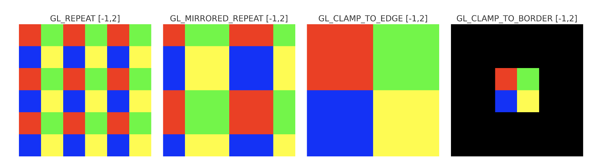
Fig. 80 Texture Warpping¶
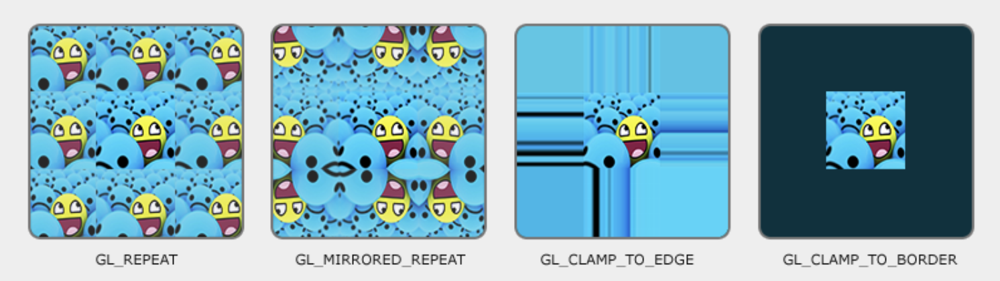
Convert normalized texture coordinates into actual memory addresses.
Texture Fetching
Retrieve texels (texture elements) from texture memory (L1 texture cache, then L2/VRAM on miss).
Handle different texture layouts: - 1D, 2D, 3D textures - Cubemaps - Texture arrays
Support compressed texture formats (e.g., DXT, ASTC, ETC2).
Texture Filtering
Give a Texture coordinates, OpenGL has to figure out which texture pixel (also known as a texel) to map the texture coordinate to.
Perform interpolation between texels to produce smooth visual results.
Filtering requires multiple texel reads + weighted average calculations.
Common filtering modes as the following are shown as Fig. 84:
Nearest-neighbor (point sampling) (GL_NEAREST)
Bilinear (GL_LINEAR)
Trilinear (with mipmaps)
Anisotropic filtering (for angled surfaces)
Let’s see how these methods work when using a texture with a low resolution on a large object (texture is therefore scaled upwards and individual texels are noticeable). The GL_NEAREST and GL_LINEAR as the following Fig. 84. As result, GL_LINEAR produces a more blurred color and smooth edge’s output.
Fig. 84 Texture Filter: GL_NEAREST has sharp color and jagged edge [27]¶
Mipmap Level of Detail (LOD) Selection
Choose the correct mipmap level based on screen-space derivatives of texture coordinates.
Prevent aliasing and improve cache efficiency.
Optionally blend between mip levels for trilinear filtering.
Texture Caching
TMUs have a dedicated texture cache optimized for 2D/3D spatial locality.
Neighboring threads in a Warp often fetch adjacent texels, improving cache hits.
Caches reduce memory latency and improve bandwidth utilization.
Specialized Operations
Texture gather: fetch 4 neighboring texels around a coordinate.
Shadow mapping: compare fetched depth texel against reference value.
Multisample textures: fetch per-sample data for MSAA.
Border color application for out-of-bounds accesses.
{kind=link}
{kind=link}
{kind=link}
{kind=link}
{kind=link}
Microarchitecture Aspects
Each Streaming Multiprocessor (SM) or Compute Unit (CU) is paired with several TMUs.
The number of TMUs is a key spec in GPU datasheets (e.g., “64 TMUs”).
TMU throughput is often measured in texels per clock cycle.
Modern GPUs balance TMUs per ALU to ensure shading and texture workloads are not bottlenecked.
Performance Considerations
Bandwidth-limited: TMUs rely heavily on memory bandwidth. Mipmapping and caches reduce this pressure.
Latency hiding: texture fetches may take hundreds of cycles, so GPUs rely on massive multithreading to hide stalls.
Workload dependent: texture-heavy games or rendering pipelines are often limited by TMU throughput.
Summary
TMUs are highly specialized GPU units that:
Translate texture coordinates into addresses.
Fetch texels efficiently with dedicated caches.
Perform filtering and LOD computations in hardware.
Deliver high throughput for texture operations that are essential in realistic rendering.
Without TMUs, all these operations would fall on general-purpose ALUs, resulting in drastically lower performance and efficiency.
Render Output Units (ROPs) [28]¶
Function:
Processed Fragments → Pixels
Overview
Render Output Units (ROPs), also known as Raster Operations Pipelines, are the final stage in the GPU graphics pipeline before pixel data is written to the framebuffer. ROPs handle pixel-level operations such as blending, depth and stencil testing, multisample resolve, and writing to memory. They are crucial for assembling the final image that appears on screen.
Pipeline Responsibilities
Fragment Reception: Accepts shaded fragments from the pixel shader.
Depth and Stencil Testing: Compares fragment depth/stencil values against buffers.
Blending: Combines fragment color with existing framebuffer data.
Multisample Resolve: Merges multiple samples into a final pixel (for MSAA).
Framebuffer Write: Commits final pixel data to memory for display.
The pipeline flow is shown as Fig. 85.
Fig. 85 The pipeline for Render Output Units (ROPs)¶
Performance Considerations
ROP Count: More ROPs can increase pixel throughput, especially at high resolutions.
Memory Bandwidth: ROPs are tightly coupled with memory controllers; bandwidth limits can bottleneck performance.
Antialiasing Support: Hardware MSAA and resolve operations are often implemented in ROPs.
Compression: Some GPUs use framebuffer compression to reduce bandwidth usage.
Vendor-Specific Notes
NVIDIA: Refers to these units as ROPs; tightly integrated with memory partitions.
AMD: Calls them Render Backends (RBs); RDNA architecture decouples ROPs from shader engines.
Intel & ARM: Implement simplified ROPs for power-efficient mobile rendering.
References
System Features – Buffers¶
CPU and GPU provides different Buffers to speedup OpenGL pipeline rendering [30].
Buffer Type |
Access |
Location |
API/Usage |
Function |
Description |
|---|---|---|---|---|---|
Vertex Buffer (VBO) |
Read |
GPU |
OpenGL, Vulkan |
Store vertex attributes |
Holds data like position, normal, and texture coords for drawing geometry. |
Index Buffer (IBO/EBO) |
Read |
GPU |
OpenGL, Vulkan |
Reuse vertex data |
Stores indices into the vertex buffer to avoid duplication. |
Uniform Buffer (UBO) |
Read |
GPU or Shared |
OpenGL, Vulkan |
Constant input data |
Shares transformation matrices, lighting, or material data across shaders. |
Shader Storage Buffer (SSBO) |
Read/Write |
GPU or Shared |
OpenGL, Vulkan |
General data exchange |
Flexible, large buffers accessible for structured shader I/O. |
Constant Buffer |
Read |
GPU or Shared |
DirectX, Vulkan |
Fast uniform access |
Optimized for fast access to frequently read small data. |
Image / Texture Buffer |
Read/Write |
GPU |
OpenGL, Vulkan |
Sample/store pixels |
Stores image data for sampling or read/write image operations in shaders. |
Color Buffer |
Write |
GPU |
OpenGL, Vulkan |
Store final pixel color |
Stores output of fragment shaders; used for display or post-processing. |
Depth Buffer (Z-Buffer) |
Write/Read |
GPU |
OpenGL, Vulkan |
Visibility testing |
Stores per-pixel depth values for hidden surface removal. |
Frame Buffer |
Write |
GPU |
OpenGL, Vulkan |
Store render output |
Holds final color, depth, or other rendered output. |
Stencil Buffer |
Read/Write |
GPU |
OpenGL, Vulkan |
Pixel masking |
Used to conditionally discard or preserve pixels in the pipeline. |
Color buffer
They contain the RGB or sRGB color data and may also contain alpha values for each pixel in the framebuffer. There may be multiple color buffers in a framebuffer. You’ve already used double buffering for animation. Double buffering is done by making the main color buffer have two parts: a front buffer that’s displayed in your window; and a back buffer, which is where you render the new image [31].
Depth buffer (Z buffer)
Depth is measured in terms of distance to the eye, so pixels with larger depth-buffer values are overwritten by pixels with smaller values [32] [33] [34].
Frame Buffer
OpenGL offers: the color, depth and stencil buffers. This combination of buffers is known as the default framebuffer and as you’ve seen, a framebuffer is an area in memory that can be rendered to [35].
Stencil Buffer
In the simplest case, the stencil buffer is used to limit the area of rendering (stenciling) [36] [34].
Buffer Type |
Access |
Location |
API/Usage |
Function |
Description |
|---|---|---|---|---|---|
Compute Buffer |
Read/Write |
GPU or Shared |
OpenCL, Vulkan, CUDA |
Parallel compute data |
Buffers used in compute kernels or shaders for general processing. |
Atomic Buffer |
Read/Write (Atomic) |
GPU |
OpenGL, Vulkan |
Shared counters/data |
Used with atomic ops for synchronization or accumulation. |
Acceleration Structure Buffer |
Read |
GPU |
Vulkan RT, DXR |
Ray tracing acceleration |
Holds spatial hierarchy (BVH) for ray traversal efficiency. |
Indirect Draw Buffer |
Read |
GPU |
Vulkan, DirectX |
GPU-issued draw |
Stores draw/dispatch args to issue commands without CPU. |
DXR: DirectX Raytracing — a D3D12 extension for real-time ray tracing using GPU acceleration.
Indirect Draw Buffer: A GPU-side buffer holding draw parameters so that GPU (not CPU) can issue rendering work dynamically.
Buffer Type |
Access |
Location |
API/Usage |
Function |
Description |
|---|---|---|---|---|---|
Command Buffer |
Write (CPU) / Read (GPU) |
Host → GPU |
Vulkan, DirectX12 |
Submit work |
Encapsulates commands like draw, dispatch, and memory ops. |
Parking / Staging Buffer |
Read/Write |
Host-visible |
Vulkan, CUDA |
Temporary transfer |
Temporary CPU-visible buffer for uploading/downloading GPU data. |
n Series in Computer Architecture and Design)